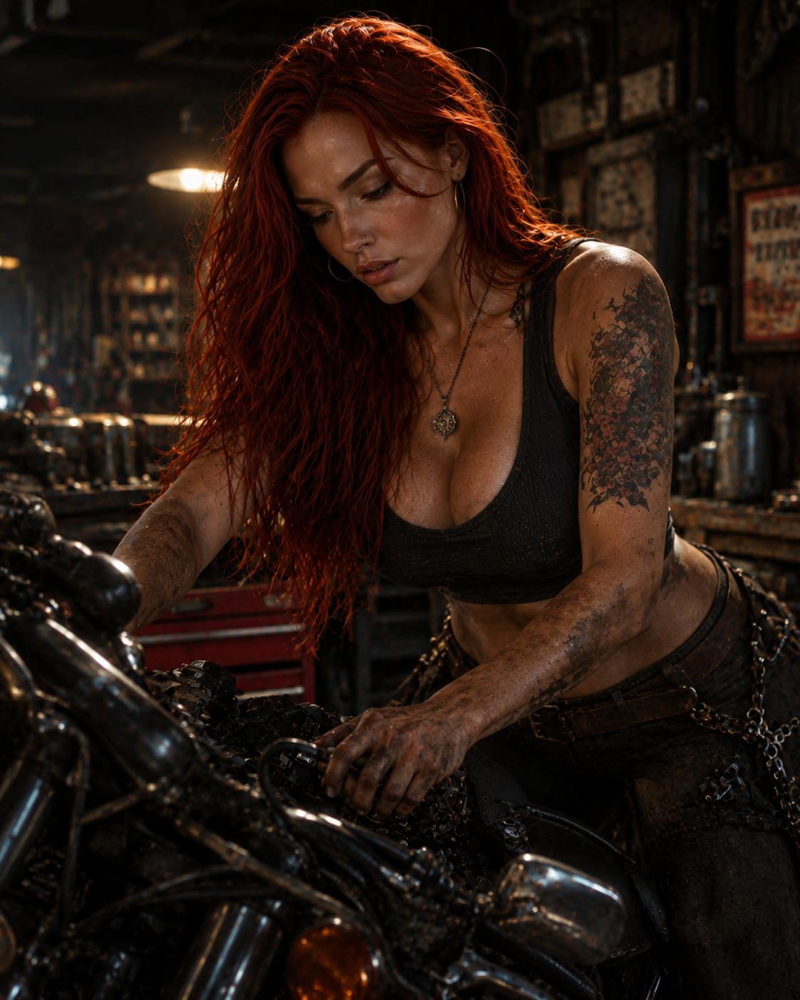
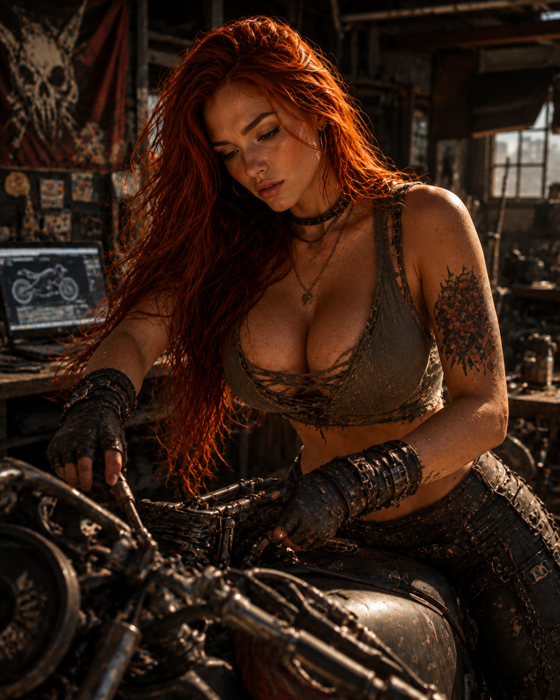

QUINTA FILHA // NOVO REGISTROIsolde
Isolde
Connor.
Filha de Jack e Alice. Suas imagens foram recuperadas, mas sua função e trajetória aguardam a lore oficial.
Filha de Jack e Alice. Suas imagens foram recuperadas, mas sua função e trajetória aguardam a lore oficial.
Os registros foram preservados como evidência visual, sem definir sua profissão ou papel no grupo.

